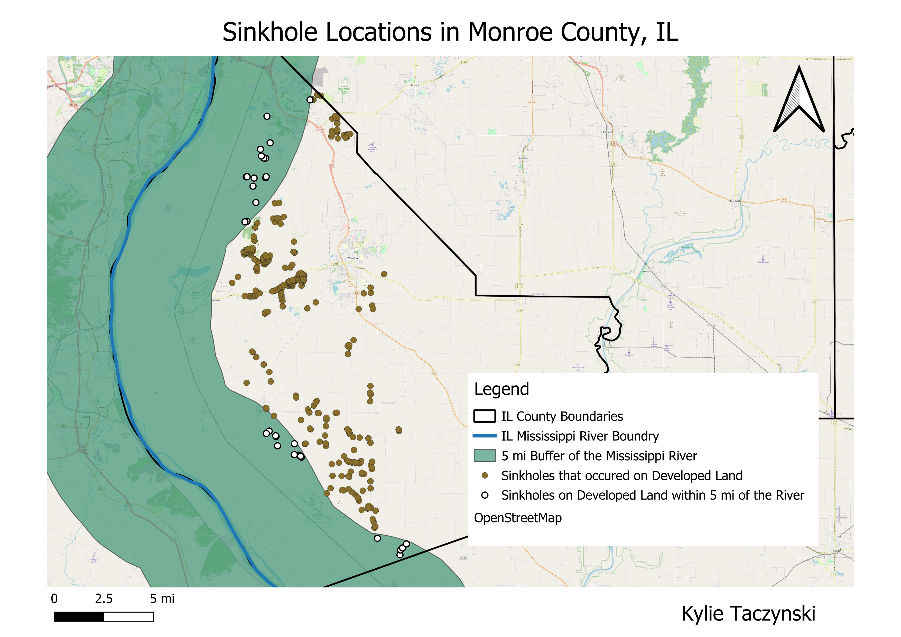

Homework 8
My “real-world” question: What percentage of sinkholes on developed land in Monroe County, IL occur within 5 miles of the Mississippi River?
I chose this question because I was curious why so many of the sinkholes that had been reported in the state of Illinois were located on the western border, which is the Mississippi River. I focused on Monroe Country which contained the largest and densest distribution of cover-collapse sinkholes within the state. I wanted to see if my first impression of the sinkholes being concentrated by the border was correct.
Method Used: The geoprocessing tools I used were buffer and intersect. First, I made a 5-mile buffer for the boarder of Illinois. The boarder on the west side of the state is the Mississippi River. Then I used the intersect tool to see which sinkhole datapoints fell within that 5-mile buffer.

Answer to the question: Based on my intersection, only 32 sinkholes on developed land occurred within 5 miles of the Mississippi River. This comes out to be ~ 9.43% of the sinkholes on developed land in Monroe County (32/339).
Layers created
Illinois Border Buffer
Intersection Data
Data Used
Sinkhole Dataset
Illinois Boundaries